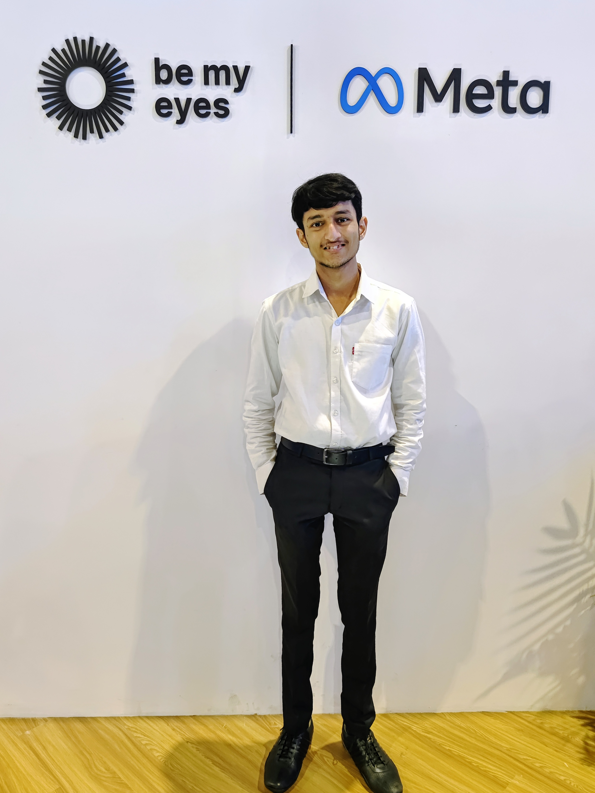

OPEN TO INTERNSHIPS & COLLABORATIONS
Building useful
digital things.
Creating
connections.
Hey, I’m Uday. A Computer Science student bringing together web development, AI and social media to turn ideas into work people can use and enjoy.
⌖ Noida, India · Available for hybrid work in New Delhi

✳TECHNOLOGY × CREATIVITY↗
↗1.6M+ viewsOrganic views. About 48 hours.
Curious by nature. Hands-on by choice.
WEB DEVELOPMENT✳AI & AUTOMATION✳CONTENT & SOCIAL MEDIA✳CREATIVE DIRECTION
01 / SELECTED WORK
Ideas put into practice.
Personal experiments, campus campaigns
and the results behind the work.
ORGANIC CONTENT EXPERIMENT↗
1.6M+
views in approximately 48 hours
2,496+organic followers
189Ktop Reel views in ~48h
CONTENT STRATEGY / AI / ANALYTICS
Growing an audience
from the ground up.
An independent Instagram project exploring AI-assisted content, short-form video and organic growth. I plan, create, publish and learn from the response.
- Generated 1.6M+ views in about 48 hours, without paid advertising.
- Added 500+ net followers in approximately 48 hours.
- Tested formats, captions and posting times using Instagram Insights.
Explore the case study ↗CAMPUS / CAMPAIGNSMAKE
IT
HAPPEN.✳
EVENT MARKETING01
Campus events, brought to life.
Campaign creatives, countdown Stories, on-ground Reels and live coverage for Fusion Tech Club and Genesis Business Club.
Behind the campaigns ↗02 / A LITTLE ABOUT ME
Equal parts
technical and
creative.
I like understanding how things work—and then making something of my own.
I’m pursuing Computer Science Engineering at PW Institute of Innovation, Noida. My work moves between building for the web, experimenting with AI tools and creating social content that earns attention.
Leading social media for campus clubs has also taught me the practical side: coordinating with people, getting the details right and delivering when an event goes live.
EDUCATIONB.Tech, Computer Science EngineeringPW Institute of Innovation, Noida · PursuingClass XII (PCM) & Class X · GD Goenka Public School, Muzaffarnagar
03 / EXPERIENCE
Learning by doing.
Campus leadership and internships
across technology, content and research.
01Social Media Lead
Fusion Tech Club · PW IOI
Created TECHMATE campaign assets and supported live coverage for 500+ registrations and 300+ participants across five events and sessions.
02Social Media Head
Genesis Business Club · PW IOI
Helped organise and promote APEX, a Pitch Deck event and the Startup Ideation & Validation workshop, with creatives and student outreach.
03Summer Intern
Teachnook · Remote
Completed a project-based internship associated with Cognizance IIT Roorkee × Wipro, working on workflow design, problem-solving and milestone delivery.
04Legal Research Intern
Law Offices · Muzaffarnagar
Assisted practising advocates with research and documentation in Criminal Law, Income Tax and GST.